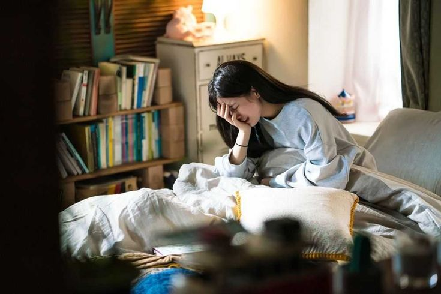

Desde pequena, Júlia sempre foi fascinada pela cultura sul-coreana: dramas, música, culinária e a língua capturavam sua imaginação. Um dia, ao assistir um documentário sobre Seul, ela decide:"Um dia, vou viajar para a Coreia do Sul e viver uma grande história de amor."
Júlia se matricula em um curso online de coreano e participa de encontros culturais na sua cidade. Ela faz amizades com pessoas que compartilham a mesma paixão.
Júlia busca formas criativas de ganhar dinheiro: começa a vender produtos de k-pop, dá aulas de português para estrangeiros e cria conteúdo nas redes sociais.
Júlia optou pelo aprendizado e aplicou para a bolsa, ela recebe a notícia de que foi aceita em um curso de intercâmbio em Seul.
Julia ao decidir se dedicar totalmente ao aprendizado, faltava pratica, e não conseguia ter uma conversa e acabou desistindo.
Julia determinada postava todos os dias e em 1 ano conseguiu monetizar o youtube e em mais 1 ano tinha dinheiro o suficiente para o intercâmbio
Ao tentar economia o valor exato para fazer o intercâmbio não conseguiu pois o valor não era para a realizade dela.
Júlia embarca para a Coreia cheia de expectativas, dividida entre explorar a cultura, fazer contatos e viver novas experiências. Ao chega a Seul e se encanta com a cidade. Nos primeiros dias, ela decide:.
Na cafeteria temática, Júlia conhece Min-ho, um jovem escritor que a ajuda com um problema de comunicação. Ele parece gentil e curioso sobre sua história.
Julia passou a noite bem, ao acorda foi na cafeteria para tomar café.
Júlia se apaixonou pelo Min-ho e começaram a namorar, ela realizou seu sonho de viajar para a Coreia, viver um romance
Enquanto tomava café, Julia conhece o Min-ho, um jovem escritor e aparentava ser gentil e curioso sobre sua história.
Júlia se apaixonou pelo Min-ho e começaram a namorar, ela realizou seu sonho de viajar para a Coreia, viver um romance